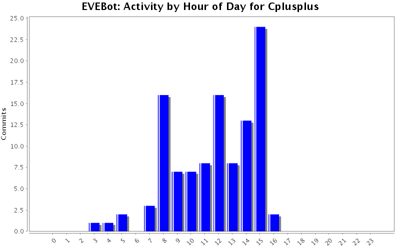
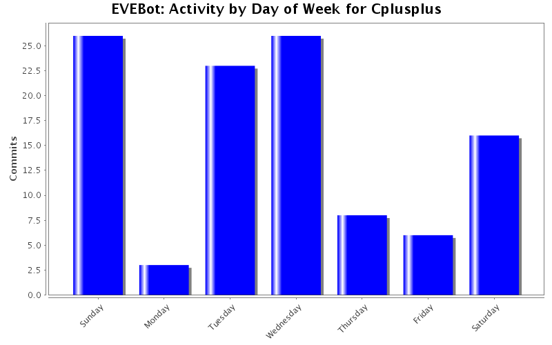
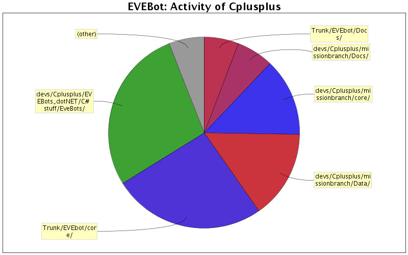

| Directory | Changes | Lines of Code | Lines per Change |
|---|---|---|---|
| Totals | 108 (100.0%) | 7638 (100.0%) | 70.7 |
| Trunk/EVEbot/core/ | 73 (67.6%) | 7182 (94.0%) | 98.3 |
| Trunk/EVEbot/Threads/ | 15 (13.9%) | 363 (4.8%) | 24.2 |
| Trunk/EVEbot/Data/ | 8 (7.4%) | 85 (1.1%) | 10.6 |
| Trunk/EVEbot/ | 7 (6.5%) | 8 (0.1%) | 1.1 |
| branches/stable/core/ | 2 (1.9%) | 0 (0.0%) | 0.0 |
| Trunk/EVEbot/Docs/ | 1 (0.9%) | 0 (0.0%) | 0.0 |
| Trunk/EVEbot/Diagrams/ | 2 (1.9%) | 0 (0.0%) | 0.0 |

typo in a UI message
1 lines of code changed in 1 file:
Now loads navigator on startup
1 lines of code changed in 1 file:
Stuff to integrate navigator into evebot properly
13 lines of code changed in 1 file:
This is why we cant have nice things
0 lines of code changed in 2 files:
State diagram of the navigator, lets see if this pushes stealthy over the edge
0 lines of code changed in 1 file:
Navigator Rev2
HELP HOW DID THIS GET HERE I AM NOT GOOD WITH STATE MACHINES
103 lines of code changed in 1 file:
Navigator thread courtesy of Python
208 lines of code changed in 1 file:
I SHOULD WORK AT SYMANTEC IM SO GOOD AT FIXING SECURITY HOLES!!
0 lines of code changed in 2 files:
RemoRemoved a rather large security hole in the IRC implementation
1 lines of code changed in 1 file:
Fixed another syntax error
1 lines of code changed in 1 file:
Fixed syntax error
1 lines of code changed in 1 file:
Added range checking for Pulling logic
42 lines of code changed in 1 file:
Quick todo on what needs finishing for combat missions
4 lines of code changed in 1 file:
Fixed drones slightly
Missioncommands , a few fixes mostly minor
26 lines of code changed in 3 files:
Pulling should unlock the target we pull when it finishes
6 lines of code changed in 1 file:
Drone returning might work now
463 lines of code changed in 1 file:
Fixed waitaggro
3 lines of code changed in 1 file:
This is the last time that its fixed , it really works this time i even tested it
3 lines of code changed in 1 file:
I swear to god i fixed it now
2 lines of code changed in 1 file:
Fixed mission drones properly this time
1 lines of code changed in 1 file:
(47 more)